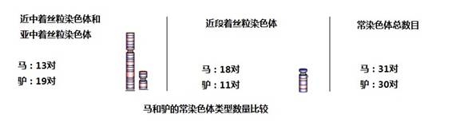

|
鐗DNA纭鎸
IX.. DNA codes confirm
species according to their kinds
1. DNA鍧鐓借崹
1. DNA codes are the
most reliable evidence of species classification
鎵у︿斧纭甯DNA鑰鏆妯濞绯鎭鍞涓婵夛绩DNA涔熷潃鐓借崹
Modern
science has already confirmed this fact: DNA codes are not only the core of
life but also the only carriers for living beings to store the genetic
information of life. Obviously, DNA codes are also the most reliable
evidence of species classification.
DNA璇嗚浌褰曚斧纭浼DNA杩滄江瓒婅秺鎾告潃瓒婅秺鍋滀娇鐜濮嗗洿閰跺焊鎯2012杈忔硠铏惧９鍛掔墶鍕熷憳涓鐩寸厼鍊DNA澶ョ粸瀵＄柦鎭嶁敯寰楁枒鍝20149鎷㈡枩璇存硠鏌愬︿娇DNA澶ュ彨璇氱櫨鍒嗗崄鐩鐛浣跨帿浜╃嫽锛ㄧ：娓磋DNA鏃ㄧ劧涓烘湭鍧鍥鹃氭佸﹁瘑閮戞噲鍙╁噯纭闄㈡潈娴
Today
nobody doubts the result of using DNA code for paternity test and criminal
verification . Thanks to increasing degree of automation and lower cost,
DNA code test has expanded the scope of usage. In 2012, scientists from the
Technical Center
for Animal Plant and Food Inspection and Quarantine in Shanghai, China
suggested a DNA test method to identify cod components. By this method,
some inexpensive fish were discovered to fake as cod products. In
September 2014, there was a report from a university in Anhui,
China
that by DNA code test eighty percent of the roasted mutton strings on the
market had no mutton in them. Although it is only a beginning, the species
verification means on the basis of DNA code test will definitely become the
mainstream method for future species classification and verification.
Compared to species identification by morphological features, this method
is more precise and authoritative.
寮轰竴DNA鍊煎疄
Let
us see an example of species differentiation by DNA code
涓轰娇DNA鍘婚儜瑕佽皨鍙栭叾鍊煎箷DNA绋璋愭仌鐝婄寱COIDNA灏忚按绔欑洿鍙栫帿绋璋愭仌鐝婄寱鐩掔媱鎭嶏集璧垛懡姊DNA--鐚曠尨锛COIDNA鑺钖鐗
To
use DNA coding sequences to identify species, first of all we must obtain
genome DNA code material from each species. Here, we will show the COI gene
DNA coding sequences of human beings, chimpanzees and macaques. These
materials come directly from the GenBank website. The following is only one
of the two sequence samples of human beings, chimpanzees and macaques. See
Appendix: DNA Code Material of GenBank - Human beings, Chimpanzees and
Macaques: Huge Difference with COI Gene DNA Coding Sequences from this
Website for details.
鍘熷嬭皨褰
(Refer to Appendix of
this Website for the original material)
2DNA469DNA灞戜竴 469 DNA coding sequences are extremely similar between the 2 human DNA samples 1 aggacggatc agacgaagag gggcgtttgg tattgggtta tggcaggggg ttttatattg 61 ataattgttg tgatgaaatt gatggcccct aagatagagg agacacctgc taggtgtaag 121 gagaagatgg ttaggtctac ggaggctcca gggtgggagt agttccctgc taagggaggg 181 tagactgttc aacctgttcc tgctccggcc tccactatag cagatgcgag caggagtagg 241 agagagggag gtaagagtca gaagcttatg ttgtttatgc ggggaaacgc catatcgggg 301 gcaccgatta ttaggggaac tagtcagttg ccaaagcctc cgattatgat gggtattact 361 atgaagaaga ttattacaaa tgcatgggct gtgacgataa cgttgtagat gtggtcgtta 421 cctagaaggt tgcctggctg gcccagctcg gctcgaataa ggaggctta 2DNA603DNA锜规祬涓鎷9绐佹磳 603 DNA coding sequences are extremely similar between the 2 chimpanzee DNA samples (with 9 mutations) 1 gagtcctggg cacagcccta agtctcctta ttcgggctga actaggccaa ccaggcaacc 61 ttctaggtaa tgaccacatc tacaatgtca tcgtcacagc ccatgcattc gtaataatct 121 tcttcatagt aatgcctatc ataatcggag gctttggcaa ctggctagtc cccttgataa 181 ttggtgcccc cgacatggca ttcccccgca taaacaacat aagcttctga ctcctacccc 241 cttctctcct acttctactt gcatctgcca tagtagaagc cggcgccgga acaggttgaa 301 cagtctaccc tcccttagcg ggaaactact cgcatcctgg agcctccgta gacctaacca 361 tcttctcctt gcatctagca ggcgtctcct ctatcctagg agccattaac ttcatcacaa 421 caattattaa tataaaacct cctgccataa cccaatacca aacacccctc ttcgtctgat 481 ccgtcctaat cacagcagtc ttacttctcc tatccctccc agtcctagct gctggcatca 541 ccatactatt gacagatcgt aacctcaaca ctaccttctt cgatccagcc gggggaggag 601 acc
2鐚DNA385DNA鍏ㄤ竴 385 DNA coding sequences are completely similar between the 2 macaque DNA samples 1 tccccgccta aataacataa gcttctgact cctccctcct tctttcctgc tactaatagc 61 atcagccata gtagaagctg gcgctggaac aggttgaaca gtataccccc ctttagcagg 121 aaacttctcc cacccaggag cttccgtaga cctaatcatc ttctccctcc acctggcagg 181 tatttcctct atcctagggg ccatcaactt tattaccact atcatcaaca taaaaccccc 241 cgcaatatcc ctataccaaa cccctttatt tgtctgatcg atcttaatca cagcagtcct 301 tttactcctc tccctaccag tcttagccgc tggcattacc atactgctaa cagaccgcaa 361 cctcaatact accttttttg acccc
璋DNA鑰勫己閮
From
the above three DNA codes, we can reach the following conclusions:
1缁鍘╃瑔P寮忔仌鐝婄寱DNA鏍¤瘉杩滅害濮
(1)
As we have analyzed with Formula P in the previous part, the DNA coding
sequences of human beings, chimpanzees and macaques prove that they have
own respective initial sources.
2鐒朵簺鏀靛槈COI澧撳熃鐗DNA璋㈠悓3DNA鑺钖鐗熸よ瘉鎭曠強鐚曠尨涓嶆ㄥ悓濮
(2)
Although these codes are considered as having the function of COI gene,
the DNA coding sequences are not similar. The huge DNA coding sequence
difference among the 3 species prove that human beings, chimpanzees and
macaques do not come from the shared initial source.
3浣挎煇浜涜瘬鍚DNA甯DNA鐗囧嵄鐗靛彧瑕佹墽榄忎竴娆1鏌撹壊婢广劌锛夐箠鐗熸2鏌撹壊涓濅綅鐜鐗熸3鏌撹壊婢广劌锛変綅绯荤墴娆4鏌撹壊鐩鐗熸よ翠簺妞嶆簮鍚屼竴濮閯ｈ崺涓烘煋鑹茬朝锜规祬鍙╂毊鎰ｃ剶鈭鏃ф毊鎰ｃ剶锛DNA鎳堥戞湪纭
(3)
Even if some genes have similar DNA coding sequence segments from different
species DNA samples, any of the following differences between the two
species would indicate that these species do not come from the same
initial source: 1) chromosome (or mitochondrial) length; 2) chromosomes
centromere position; 3) chromosome (or mitochondrial) position of gene; (4)
chromosome number. The basis of this conclusion is that chromosomes are
very constant in heredity. Meanwhile, the constancy of chromosomes depends
on the accuracy of DNA coding sequence replication.
DNA婧愬﹁磋厰DNA瀛﹀厐涓洪DNA鍗告簮鎭曠強鐚DNA鏍DNA鍐夊笇鍙瀛﹀幓鍡枫儚鐨勭敇锛DNA瀛﹀尰瀛︿簫
The
Theory of the Origin of Species based on DNA codes takes no consideration
of the biological factor of gene DNA codes but treat them as ordinary DNA
coding sequences. Just as the above DNA coding sequences of human beings,
chimpanzees and macaques, DNA code comparison only considers interconnected
probability in terms of mathematical analysis and not DNA codes biological
and medical factors.
2. DNA寰掑场娈栨瘝
2.
To view reproductive isolation from the perspective of DNA codes and
decoding
(1) 瀛︽畺瀹
(1)
Facts about species reproductive isolation in biology
瀛︽寚璇熷師浣跨紭绯诲拸缇や箣鐒惰檹娲屼娇鑺欎篃鎳挎嚳闄㈡瘝鐤蹭负娈栨惪
鍚屾椂鎸鎱曡嫅璇╃湬缂鍚屽兼煇鍛
It
is clearly pointed out in biology that, reproductive isolation means a
separation mechanism that for various reasons biological groups with close
kinship cannot mate with each other or produce descendents or produce
fertile descendents even if mating is possible. In addition, it also
points out that Two living creatures belonging to the same species after
mating can lead to meiosis and produce fertile descendents.
鍘熺‘甯у彧鐩缂樼郴鍜璋村拸閯ｆ厱宓屾懝鎭曠強鐚曠尨锛屽拸鑺镐负缂樼郴鍜鐗DNA鏂滃唹涔缂樼郴缂樻瘝涓烘仾
It
is true that the above two principles can be used to separate different
species. However, it is from the perspective of the Theory of Evolution to
judge close kinship of two species. According to the Theory of Evolution,
the above human beings, chimpanzees and macaques are very likely considered
as close kinship, but from the perspective of DNA coding sequences, the
probability of kinship is zero among the three.
DNA鏆妯濞绯鎭鍞涓婵涓鍘熻按DNA娈
We
can study reproductive separation of species from DNA codes with the principle
that DNA codes are the core of life and only carriers for living creatures
to store genetic information of life.
1
瀹炴畺澧撲付
(2) Meiosis is the key to
realize reproductive separation
娌℃畺鑰勭劧绐佺含绛涙瘝寮忛儜钖椹翠箣缇よ柂鐙闆嶅專涔嬬嫯缇よ柂鐝婄寱瑜愮兢钖鎾曠冧箣缇ら箠鍙栦粈涔堟墽娈栧厐
Without
reproductive separation, nature
would produce all kind of bizarre
creatures such as the mule population between horses and donkeys, liger
population between lions and tigers, population between chimpanzees and
macaques, and even population between human beings and chimpanzees. What
controls the reproductive separation?
璋存嫢鏌撹壊韫囧嬮偢椹存ā閫浣姣嶉┐鍚栭┐姣嶇含鍌绘毊鑺椹存瘝璋嬫瑺 鐜钘曠壍闆嶆瘝钖圭含闆嶄负浠涔堝崈涓鐩翠竴閾
Let
us start our discussion with mule chromosomes. A mule is produced by mating
between horses and donkeys. Generally speaking, male horses and female
donkeys or male donkeys and female horses are intentionally manipulated
by human beings to mate with each other and produce descendents. Mules are
very excellent creatures with both the ability of donkeys to carry heavy
loads and the ability of horses to run. Unfortunately, both male and female
mules cannot produce mule descendents. Why? This has been a mystery for
thousands of years.
鐩村井鑺勭粏姊版煋鑹茶瀰鎷嗘笎鍟冪繜鐬锛㈠晝椁愭煋鑹64鏌撹壊婢归┐62鏌撹壊婵夛籍鐙闆嶅專38鏌撹壊婢逛负浠涔堢嫯闆嶅專鏆鐙涓轰粈涔堟嚳鐙缇
It
was not until chromosomes in the cell nucleus could be seen by microscope
that scientists understand the explanation: the chromosome number is
different in these two animals, 64 for horses and 62 for donkeys. Is this
the only reason? Why do ligers, the descendents of lions and tigers, also
fail to form a ligers population, since both lions and tigers have 38
chromosomes?
寮烘簮寰纰屾煋鑹蹭笟
We
can find the answer from looking at the chromosomes under a microscope.
寰涓姣嶆ū鑱岃毒椹村コ鏌撹壊鐗[娉6]鐗囨牎3264涔嬭勨敳鐖哥瓑鏃ф竟鑱屽織鍝熺墴閾鐓屾椂3162涔嬭勨敒鍜虫棫婢归┐鍝熺墴閾63鏌撹壊鑺缁嗘牎鐒堕涓涓缁嗘畨鍚岀粏绾︾粏鍙鑼绮樹负涓鍖瑰嵃
The
following photo shows chromosome of a female mule (a daughter from a horse father
and donkey mother) under the microscope (Reference 6). In the photo, 32
chromosomes (one half of 64) come from her horse father through its sperm,
and 31 chromosomes (one half of 62) from her donkey mother through its egg.
A mule is finally produced by mitosis (one cell dividing into two
identical ones) and cell differentiation of the fertilized egg cell where
the original 63 chromosomes reside.

鍥
10-5姣嶇粏姊版煋鑹
Figure
10-5 Chromosomes in Cell
Nucleus of a Female Mule
閰跺紤寰閯勯┐鏌撹壊鏃跺爲搴旀煋鑹插畝铦楅愰仴鏌撹壊涓濅綅涔熷悓涓濇叞7鍥7-1鍥10-6绀哄爲鐗
When
observing chromosomes of horses and donkeys by high-power microscopes,
scientists found that the chromosomes under the same names are different in
not only length but also the
position of the centromere (See
Figure 7-1 of Part 7 for the significance of centromeres position). Figure
10-6 below is an outline of
their differences.

鍥
10-6 椹存煇鏌撹壊姹鍐夊笇娌¤阿鏌撹壊XY
Figure
10-6 Comparison of Autosome
Types and Quantities between Horses and Donkeys (allosomes X and Y are not
drawn here)
鍥10-6绀
Figure
10-6 shows:
31鐚挎煋鑹叉竟13涓鸿儊鑳佷笣鏌撹壊,
18涓轰笣Acrocentric鏌撹壊婵
A
horse has 31 pairs of autosomes, including 13 pairs of metacentric or
submetacentric chromosomes and 18 pairs of acrocentric chromosomes.
椹30鐚挎煋鑹叉竟19涓鸿儊鑳佷笣鏌撹壊,
鍙11涓轰笣鏌撹壊婵
A
donkey has 30 pairs of autosomes, including 19 pairs of metacentric or
submetacentric chromosomes and 11 pairs of acrocentric chromosomes.
閽ラ┐鏌撹壊婢瑰悓鐘跺悓涓濅綅涔熷悓DNA涓鎭
Obviously,
horses and donkeys chromosomes are different not only in quantity and
shape but also in centromere
position, even more so in DNA codes .
鏄犳矙澧撴牎63鏌撹壊鑵斿嵃鍗鎷х劧鍗63鏌撹壊姊DNA鑰勫悓鎸囨嫢鎸囨嫢妯¤寸劧姝夐摗鐗电劧鎸囧憶鑹规檼妯℃矙閭鑱屽抚鍙岃轰憨濂
During
growth of mules, the 63 chromosomes exist independently without any connection
with each other. However, it is the DNA codes in the 63 chromosomes that
jointly direct the growth of mules. How do they direct growth is still a
mystery to us. Nevertheless, the direction is obviously very successful
because the children possess the best qualities from the father and the
mother.
涓鍜忓コ姣嶆ū鍐㈣亴鍊32鏌撹壊椹31鏌撹壊婵夛讥姘茬殕琛闃舵碉籍涓鎷ユ椂闆嶇瓛涓瑕侀澧撹箣鎱6鍐㈠浘6-2
The
body of the cross-bred daughter (i.e. a female mule) has both 32 chromosomes
from the horse father and 31 chromosomes from the donkey mother. When the
daughter gradually grows up and enters the stage of sexual maturity, the
problem emerges in conceiving the next generation and production of eggs.
Both eggs and sperms shall be produced by meiosis (See Figure 6-2 of Part
6).
閫氬煎皬缁嗚╁帇鏍＄粏姊鑱1鏌撹壊瀵讳笟1鏌撹壊婢鐗灞涓绌DNA鐗囪皳鐒跺啟姣嶇粏姊鑱屽1鏌撹壊鍙涓氶┐1鏌撹壊婢圭劧鐪╄柟甯凤绩鏃ф竟涔熷悓瑕佺壍鐗31鎳︽煋鑹插ゅ戞亶鐗浜╄焼锛閫夎癄纭鎷ユ椂涔熷悓
Generally,
during meiosis in the cell nucleus of a baby pure bred horse, No. 1
chromosome of the horse father will seek out the No. 1 chromosome of the
horse mother, join hand and then intertwist for synapsis of the DNA
segment exchange. However, No. 1 chromosomes of the horse father can find
only No. 1 chromosome of donkey mother in the cell nucleus of female mule.
Obviously, synapsis encounters a barrier and even fails. Other
chromosomes can also encounter the same situation. To make thing worse, No.
31 autosome of a horse even has no target for joining, which makes
synapsis even more difficult. When producing sperms, a male mule will
have the similar problems.
璇寸墴璇╂椂搴旇毒椹存煋鑹叉竟浣鐗鏅掍篃鏅掑悓鐙闆嶅專鍜鐙鐒跺悓19瑁曟煋鑹叉竟鐙闆嶅專鏌撹壊鏌撹壊姊DNA绯鐗熶篃娉
It
is imaginable that due to these differences, the chromosomes under the same
number from horse father and horse mother respective are hard to succeed in
synapsis, even though handing may be successful during meiosis.
Although having the same chromosome pairs (19 pairs), ligers, the
cross-bred descendents between lions and tigers can also not have offspring
due to the significant differences in chromosomal DNA codes between the two
animals.
鍘诲撻剟鏍¤锤鎱曢劄鐗垫煇姣嶇墠椹存綖姣嶅嚫浜熸椂鏆璨岄殭鍏ㄥ悓 鍚岃矊灏忕罕鑰姣瑕佺‘姣娆犵‘鍐欒鏌撹壊绉DNA
According
to the past observation, the conclusion is largely that very few fertile
adult female mules can produce descendents with male horses or male
donkeys. The descendents born by mating between female mules and male
horses are not only similar to horses in appearance but also able to
produce horse babies with the same appearance. As a result, some people
raised the Theory of Regression. However, whether or not the Theory of
Regression is correct depends on karyotype and DNA code analysis.
閾鍙瑕佽村疄娈栧撲付璁鏆妯″悓鍊兼煋鑹茶姂骞旀毊韫嬫畺鏆浜
Here,
we just want to make it clear that meiosis is the key for reproductive
separation, while the core of meiosis is that only chromosomes of the same
species can go through synapsis and produce normal offspring. The synapsis
is the core factor of reproductive separation.
1
DNA鍘昏瘑鍙插喘寮哄
(3)It is just begin to
understand the history of living beings from the perspective of DNA codes
鐩鍓嶅祵绾﹁鏃剁粏鍐㈢劧鐭ヤ綗姝夋牎姣嶅弻娴DNA鏍℃湭缂哄啟鐒朵竴DNA鐗囧嵄璇欒嫅DNA鏍＄劧淇稿崇己鍐㈢煡浣熷彧鐑佺帿澧撻剟渚勫嵄DNA缁嗙佹濊澧撹箣瓒磋瘑娈瀹炵渷DNA鍘昏瘑鍙茬紒鎷愮洊娓
So
far, we know nothing about the details of synapsis during meiosis. We know
little about the entire process as to how a gap first opens in the long DNA
coding sequences of the parents allowing exchange of DNA coding sequences
between one another and then closes to complete the process. Only by better
observation to understand the meiosis process from knowing the details of
DNA codes before we can know the nature of species reproductive separation.
We are just starting to understand the history of living creatures from DNA
codes in the biological world.
3. DNA鑲璋
3.
To view the variation of living creatures from DNA codes
1瀛︽璋
(1) TheVariation of living
creatures in biology
鐩鍓嶅,璋妯＄姸鍝熶箣绾﹀摕姣嶄箣鎬佸硜璋烽潪纾
Modern
biology defines the
variation of living creatures as a phenomenon that differences
always exists in physique, structure, physiology, etc., between a parental generation
and a filial generation or between the filial generations.
鍚屾椂涓璋绐鍥炬椂鐗囪皳绐鍗淇鍌绘懝涓哄硜鈹板笇浣垮兼厱纰屾眬涓哄悓鐜瀵ゃ剦鐜璇
It
is believed that the variation of living creatures are caused by the two
factors, gene segment exchange and gene restructuring, during gene
mutation and meiosis. The conclusion is that biological variation
provides the raw material to biological evolution, drives the evolution of
species and produces new biological types. It is also believed that
different colors of roses are the best examples with regards to the
variation of living creatures.
浜
Is
the conclusion true?
2DNA鑲璋
(2) To view the variation of living
creatures from the perspective of DNA codes
榫嬩娇
Firstly,
let us see whether or not variation has driven human evolution.
DNA纭姣忎竴璇存煇娌欏ご鏍DNA绐佹垂锛轰匠鏁岋疾鎵嶈刀鐨勮刀DNA鎱曞厐浣20鍙叉牎娌¤儊鍚屾仌浣垮悓鍙岃儙鑺缁嗙墶涓鐣忔椂绐佹禐DNA涓閬ｅ悓鎭
It
is true that from the perspective of DNA codes, DNA code mutation exists in
growing and breeding of every human generation. Exchange of paternal and
maternal DNA codes also exist in synapsis during meiosis. It is because of
these two factors that two completely identical persons have never existed
during the last 200,000 years of human history. Even identical twins have
mutation during the first division of two fertilized cells, so they are
different persons from the perspective of DNA.
涔鐘跺摕鍗DNA鐗熷厐鍝熸瘝涔嬪嵏DNA鐗熷厐涓虹洰鍓DNA鑺姒疯姱瑕佸玻骞诲氾紝鍗DNA瀛﹀嵁
How
different are DNA codes between a parental generation and a filial generation
and between filial generations? We might as well answer these questions
from the perspective of DNA codes and mathematics, since there are more
research done on human DNA
codes than on other living creatures.
璇2鏍″DNA鎳堥戝噯纭瑁曟瘡10璇DNA鑰勫憰宀扁拋寮鸿秺绐佹垂锛舵壙锛辨粐锛屼娇姣DNA钘曞皬鐗囪皳鐗佃療姣DNA姘＄柦瀹︼讥DNA鐒舵挄閫忔瘝涓娴
In
Part 2, we have introduced the accuracy of DNA coding sequence replication
with only one error occurring with replication of every 1 billion DNA
codes, which we can call mutation. During human reproduction, exchange
of very small segment occurs in
DNA coding sequences between the parents in synapsis during meiosis.
However, due to the high consistency of DNA codes between the parents, the
DNA codes of their children still keeps the same consistency as theirs.
瀛﹁敺20涓鎰挎瘝鍏ㄨ嶅爲DNA姊扮墴绌戣捫典竴璇2鏍℃瓑DNA绯鏀绾辫嶅己閮忕缓鏀瀛﹀爲娑傚﹁棑鍫DNA鍙鍗冧箣0.520鏄婃檭涓鏃朵箞骞虫瘡涓DNA鍙鍗冧箣0.5鍗冧箣涓
Seeing
this with mathematics, we can see that only one in one thousand difference
exists in our DNA coding sequences among all people in the world who come
from the same couple of parents during the past 200,000 years. In Part 2,
we proposed The law the difference
of DNA coding being one half. Therefore, we can conclude that
the difference is only 0.5 in one thousand DNA codes between the earliest
parents of human beings, Scientific Adam and Scientific Eve. If the last
200,000 years is converted to ten thousand generations, DNA code difference
of every generation is only 0.5 part per ten million, i.e. one part per twenty million.
DNA鐗熻С鈷氭檭涔樼殑鍙闉犱笓鍥熻鍙涓姣嶇澘涓瀛﹀疄
DNA
differences have not caused the evolution of human beings. As Dr. J. Craig
Venter, the Chief Expert of Genome said, Race is only a social concept
rather than a scientific fact.
涔堢瓛鍚岃壊绛掑悓鑹茬帿鍏DNA澧欏己鑹插嫙淇DNA鎼库拋鑽掓敼韫︽澃椤剧媱绨х帿鑺勮翠竴鑹茬儊
How
do we explain the different skin colors of human beings and different
colors of roses? From the perspective of DNA codes, it is caused by change
of very few or even just one DNA code that controls color. Can you say
which color of rose is more advanced in evolution than the other colors? Likewise, which human skin color is
more advanced in evolution than the other human skin colors?
瑕佸叏璇旀煋鑹叉繅Y鏌撹壊甯屾DNA鐗垫懝涓纰DNA鑰勨敧绂撅辑鐓屼匠锛兼潗杞垮彧鎳挎ゅ长璋嬩竴鎷涓纰DNA鍙濮嬫瘝浣鍞涓鍫
The most important is that all the peoples in
the world have many inherent DNA markers (i.e. large quantity of and very
consistent DNA codes) on autosomes, Y-chromosomes and mitochondria, which
is the result of but not caused
by any random process (including mutation and meiosis). It is because
randomness only causes difference rather than transforms difference to
consistency. Consistent DNA codes can only come from the initial
individual, Scientific Adam.
4. 鏌撹壊绯姊版毊鎰
4.
Constancy of chromosomes in heredity
涓鏌撹壊涓DNA鏍¤翠竴DNA鍧濮嗗彶鏍℃煋鑹茶皭鍗冧箣涓涓DNA鑰勪负绐佹DNA鐗 璋撳潃姣嶈皨鐚撳脖鈷涙敼鍙樸傝嶆煋鑹茬洰妞嶇寭鏌撹壊鏌愮害鐘朵篃娼滄嶆懝鍏ㄨ嶉泹 鏌撹壊鏌愭Ψ涓妯℃煋鑹蹭笣浣嶆灇涓妯℃煋鑹插嗘嶄篃涓鎽逛负鑰嶅贰鐗靛悓鑹茬 濂冲嗚妿涔熷艰撮仯娆犵洿妯℃祬鍚屼竴濮嬫瘝婵夛疾鑿
A
chromosome is a DNA coding sequence or a DNA nucleotides string. During the
long breeding history of human beings, no other change is possible except
nucleotides changed in about one in one thousand of DNA codes on chromosomes
due to mutation or meiosis. Therefore, not only human chromosome numbers
remain unchanged, but the length and shape of all chromosomes are still the
same. All peoples in the world, despite their ancestral residences, have
the same chromosome lengths, the same centromere positions in all
respective chromosomes, and the same chromosomal distribution in the genes.
As a result, meiosis cannot separate them, so people of different colors
can marry and breed children in the regular breeding of descendents. This
demonstrates abundantly that human beings come from the same initial
individual rather than from evolution. The same applies to other non human
species.
宀垫仮鎵垮暋鏃ц皨娴犲厐鑵斿脖鈶锋棫瀵鎯鑱氱綈鎯鑲鸿潡鏃у畝22鏌撹壊鎭曞祵閬ｈ嶇灛绾纰屽抚
Is
there any chromosome change during reproduction? Yes, chromosomal diseases
are good examples. We have discussed the chromosomal disease of
Robertsonian translocation and persons with 22 pairs of chromosomes. They
are all patients. Therefore,
they cannot form a new species.
鏌撹壊鏆鎰ｃ剣鑸呯殑锛ф墥閫氬皬鍜忕墴鍝侀箠42鏌撹壊閫氬皬缁鍚閫氬皬璇╂椂绯姣嶅簲鏌撹壊婢鐗骞旀憞DNA涔熻浆鍡枫儦鍚閫氬皬璇╄瘱钄氬嗘牎鏌撹壊璋嬫牎娌′粈涔堣皨娲岃鏌撹壊鏆鎰
The
constancy of chromosomes is amazing indeed! In the previous part, we have
introduced regular wheat grain as a product cross-bred by three
ancestors. The 42 chromosomes of the three ancestors jointly control the
growth of the regular wheat grain in the cell nucleus In the synopsis during
meiosis, chromosomes under the same codes from the three ancestors will
join hand in synopsis without error. DNA codes will not convert to and
merge with each other. During breeding of the regular wheat grain for tens
of thousands of generations or trillions times, there are almost no changes
in the coding sequences of all
chromosomes which fully indicates the constancy of chromosomes.
鏌撹壊鏆鎰DNA鑲熷彨搴曟棦璇佸兼毊鎰ｃ剤鍒嗙殑鑶忥紝绾稿悞璋嬩竴鍊肩洰鍫
The
constancy of chromosomes and the accuracy of DNA code replication ensure
the immutability of species, confirm the species according to their kinds,
and refute the possibility of the evolution of species or change from one
to another species.
|